Kama Sutra
100 positions. A tasteful, non-explicit guide to partner positions with line illustrations and connection tips. For adults only.
Standing
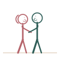
Facing UnionSamapada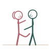
The CreeperLataveshtitaka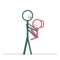
Standing LiftUtthana Bandha Wall EmbraceBhitti Asraya
Wall EmbraceBhitti Asraya Standing BendPurah Namana
Standing BendPurah Namana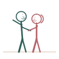
Doorway BraceDvara Asraya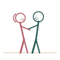
Standing Side LeanParsva Sthiti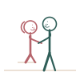
Height EaseSopana Sahaya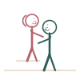
Staircase StepSopana Sthiti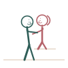
Counter SupportPeetha Asraya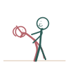
Standing ReclineNamana Sthiti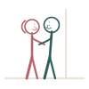
Mirror FacingDarpana Sthiti- Balcony RailAlinda Asraya
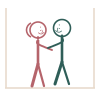
Elevator PauseYantra Sthiti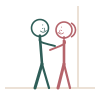
Hallway PressMarga Nishpidana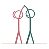
Overhead ReachUrdhva Hasta Sthiti- Standing CradleUtsanga Sthiti
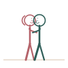
Standing Forehead TouchLalata Sparsha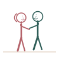
Standing TwirlBhramana Sthiti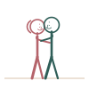
Standing Cheek to CheekKapola Sparsha
Seated
 Lap FacingAnka Asana
Lap FacingAnka Asana Lap ReverseAnka Paravrtta
Lap ReverseAnka Paravrtta Chair EmbraceAsandi Asana
Chair EmbraceAsandi Asana Cross-Legged CloseSukha Sammukha
Cross-Legged CloseSukha Sammukha Edge SeatPrantasana
Edge SeatPrantasana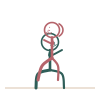
Straddle SeatVikirna Asana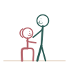
Low Stool SeatPeetha Asana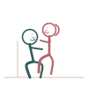
Seated Recline SupportAsraya Asana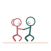
Bathtub FacingSnana Asana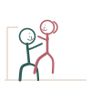
Sofa CornerKona Asana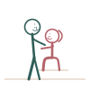
Counter SeatPeetha Upavishta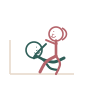
Car SeatYana Asana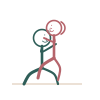
Piano Bench SeatVadya Peetha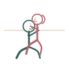
Windowsill SeatGavaksha Asana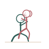
Garden Bench SeatUdyana Peetha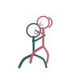
Office Chair SeatKarya Peetha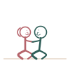
Cross-Legged Forehead TouchSukha Lalata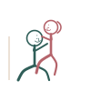
Seated ReclinerNati Peetha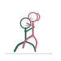
Ottoman SeatUpabarhana Peetha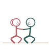
Seated Hand-HeldKara Bandha Peetha
Reclining
 Face to FaceSammukha Asana
Face to FaceSammukha Asana Elevated HipsUtthita Kati
Elevated HipsUtthita Kati Knees Drawn InJanu Akarshana
Knees Drawn InJanu Akarshana Legs RaisedUttana Pada
Legs RaisedUttana Pada Propped ReclineUpabarhana Asana
Propped ReclineUpabarhana Asana Cross ReclineVyatikirna Asana
Cross ReclineVyatikirna Asana Deep FoldNata Asana
Deep FoldNata Asana Reclining Close EmbraceAlingana Sayana
Reclining Close EmbraceAlingana Sayana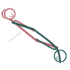
Pillow WedgeUpadhana Kona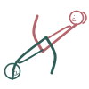
One Leg UpEka Pada Uttana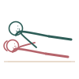
Floor Cushion ReclineBhumi Upadhana Reclining Half-SeatedArdha Upavishta Sayana
Reclining Half-SeatedArdha Upavishta Sayana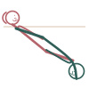
Hammock ReclineDolayana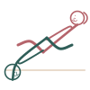
Picnic Blanket ReclineKantha Sayana Bridge SupportSetu Sayana
Bridge SupportSetu Sayana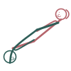
Reclining Forehead TouchSayana Lalata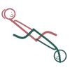
Reclining Hand-HeldSayana Kara Bandha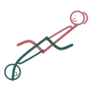
Reclining ButterflyBaddha Sayana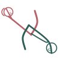
Reclining Overhead ArmsUrdhva Bahu Sayana Reclining Ankle CrossSayana Gulpha
Reclining Ankle CrossSayana Gulpha
From behind
 Kneeling BehindPaschat Janu
Kneeling BehindPaschat Janu Spooning BehindParsva Paschat
Spooning BehindParsva Paschat Standing Bend BehindNamana Paschat
Standing Bend BehindNamana Paschat Seated Lap BehindAnka Paschat
Seated Lap BehindAnka Paschat Elevated BehindUtthita Paschat
Elevated BehindUtthita Paschat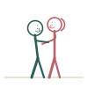
Braced BehindAsraya Paschat Reclining BehindSayana Paschat
Reclining BehindSayana Paschat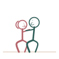
Upright Kneeling BehindRju Paschat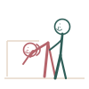
Sofa Back BehindPrishtha Paschat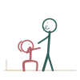
Bed Edge BehindSayya Prantasana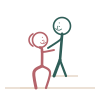
Staircase BehindSopana Paschat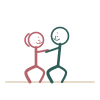
Floor Kneeling BehindBhumi Paschat- Bench BehindPeetha Paschat
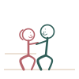
Kitchen Sink BehindPrakshalana Paschat Elevated Pillow BehindUtthita Upadhana Paschat
Elevated Pillow BehindUtthita Upadhana Paschat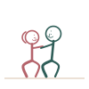
Standing Tiptoe BehindPada Agra Paschat Behind with Hand-HoldKara Bandha Paschat
Behind with Hand-HoldKara Bandha Paschat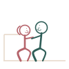
Chair BehindAsandi Paschat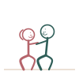
Behind Forehead RestLalata Vishranti Paschat- Behind Side LeanParsva Asraya Paschat
Side by side
 Classic SpoonParsva Sama
Classic SpoonParsva Sama Face to Face SideParsva Sammukha
Face to Face SideParsva Sammukha Scissor SideKartari Asana
Scissor SideKartari Asana Side Close EmbraceParsva Alingana
Side Close EmbraceParsva Alingana- Side Cross ReclineParsva Vyatikirna
- Side Seated FacingParsva Upavishta
- Side Half-TurnArdha Parivrtta
- Side Gentle WrapParsva Veshtana
 Leg Over Shoulder SideParsva Skandha Pada
Leg Over Shoulder SideParsva Skandha Pada- Half-Seated SideArdha Upavishta Parsva
- Side Sofa LeanAsandi Parsva
 Morning Side WrapPrabhata Veshtana
Morning Side WrapPrabhata Veshtana Side Ankle CrossParsva Gulpha
Side Ankle CrossParsva Gulpha Side Hand-HeldParsva Kara Bandha
Side Hand-HeldParsva Kara Bandha Side Forehead TouchParsva Lalata
Side Forehead TouchParsva Lalata- Hammock SideParsva Dolayana
- Side Overhead ArmsParsva Urdhva Bahu
- Beach Towel SideParsva Kantha
 Side Knees Bent TogetherParsva Janu
Side Knees Bent TogetherParsva Janu Side Nose TouchParsva Nasika
Side Nose TouchParsva Nasika
Nothing found. Try another word.